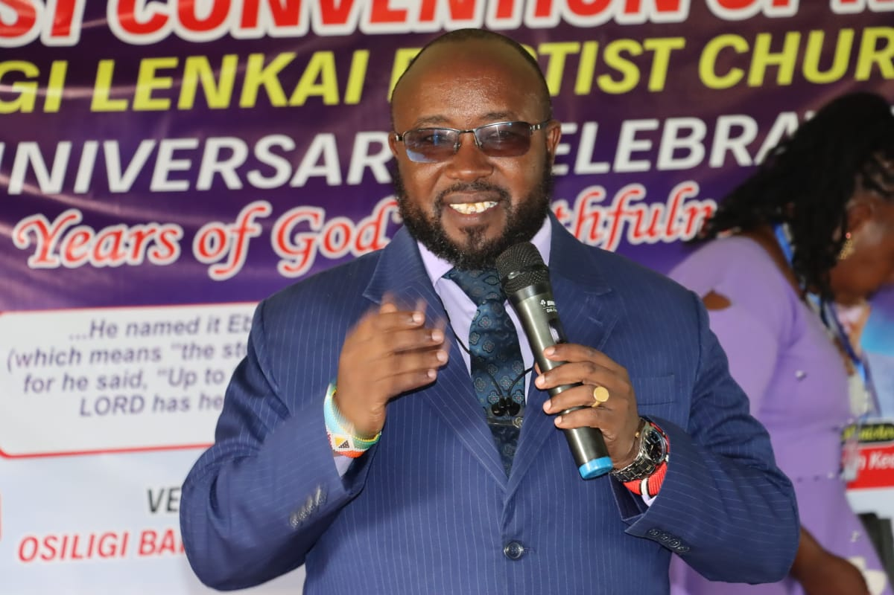

Christianity is one of the main religions practiced in the savannah regions.
It is centered on the teachings of Jesus Christ, emphasizing love, forgiveness, honesty, and helping others.
Churches are common in villages and towns, serving as places of worship, guidance, and community gathering.
People attend Sunday services, pray, sing hymns, and participate in Christian festivals like Christmas and Easter.
Christianity in the savannah often brings moral and spiritual guidance, helping people make positive choices in life.
It encourages peaceful living, respect for others, and ethical behavior, which strengthens family and community bonds.
Churches also support education, with many offering schools or learning programs, and sometimes provide health services, counseling, and social support.